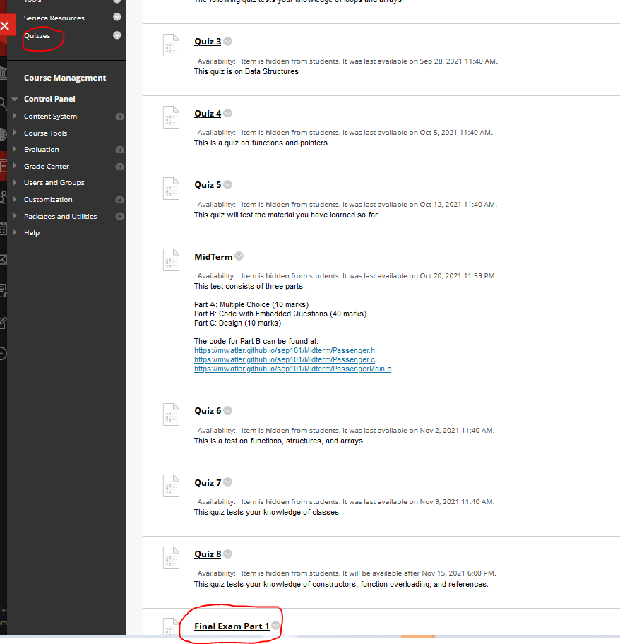

<h1>Final Assessment</h1>

<!--
<ul>
<li>The final assessment will open on BlackBoard at 12:01am on ... and close at 11:59:59pm on .... It can be found on BlackBoard under 
    <b>Quizzes</b>:<br><br>
<br><br>
</li>
<li>The final assessment is in two parts.</li>
<li>Part 1 is worth 60 marks and consists of 60 questions embedded inside code. These questions are duplicated on BlackBoard and must be answered on BlackBoard. 
    The links to the code can be found in the <b>Description</b> section of part 1 of your final assessment. You have 90 minutes to complete part 1 and it 
    must be completed in one sitting.</li>
<li>Part 2 is worth 20 marks and consists of debugging. You are given code with 10 errors. You have to identify the errors and state how you would fix them. 
    You have 30 minutes to complete part 2 and it must be completed in one sitting.</li>
<li>It does not matter if you do part 1 first or part 2. Both have to be completed on the day of the assessment.</li>
</ul>
-->
